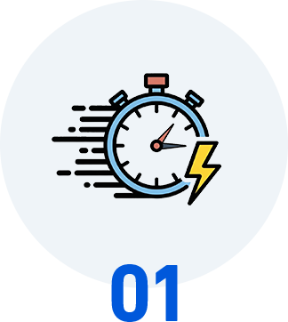
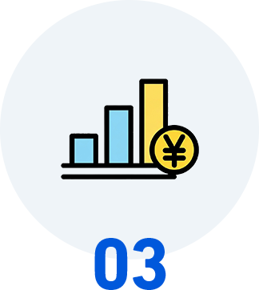

たった1週間で見えてくる、業務のAI化
改善ポイント
AIが自動分析するから速い。
業務のムダを素早く可視化し、
すぐに改善アクションへ
- ＼ 60秒で簡単入力！ ／ 今すぐ無料相談
-
＼ お急ぎの方はこちら！ ／
 048-871-7160
平日9:30〜18:30（土日・祝除く）
048-871-7160
平日9:30〜18:30（土日・祝除く）


分析・提案
-
たった 1 週間
データ収集から分析まで
スピーディーに完了 -
AI自動 分析
AIが3チャネルのデータを
自動で統合分析 -
即実行 可能
提案書に基づき
すぐに改善着手できます
こんなもどかしさ
ありませんか？
-
AI導入の検討に時間がかかりすぎる
-
現状把握だけで何ヶ月も
かかってしまう -
コンサルの報告書が
なかなか出てこない -
アフター（改善後の姿）が
いつまでも見えない -
改善したいのに
スピード感が足りない
AI業務改善チェックなら、
たった1週間で業務のAI化ポイントが見えるから、
すぐに改善アクションを開始できます。
スピーディーな調査の仕組み
AI業務改善チェックでは、効率的な3チャネル方式でデータを収集し、AIが自動分析。
最短1週間で、業務ごとのAI化ポイントと改善提案書が完成します。
-
PC操作ログ取得 
ActivityWatchが自動で記録。手間なくPC業務の時間配分を把握
-
音声振り返り 毎日たった5分。話すだけで業務の中身と課題が見えてきます
-
業務日報フォーム 
簡単入力で全体像を把握。非PC業務も含めて網羅的にカバー
-
AI自動分析 人手では数週間かかる分析をAIが自動実行。圧倒的なスピードで結果が出ます
-
改善提案書の作成 業務ごとのAI化可能性と改善フローを、わかりやすい提案書にまとめて納品
-
実行支援（オプション） 提案書に基づき、すぐにAI化を開始。スピーディーに改善効果を実感
ポイント
人手では数週間→
AIなら1週間で分析完了
-
たった1週間で
業務のAI化ポイントが見える 今すぐ無料相談で
スピーディーな業務改善を始めませんか？ -
- ＼ 60秒で簡単入力！ ／ 今すぐ無料相談
-
＼ お急ぎの方はこちら！ ／
048-871-7160
平日9:30〜18:30（土日・祝除く）
-

-

選ばれている理由
-
 圧倒的なスピード データ収集1週間＋分析1週間。最短2週間で改善提案書をお届けします。
-

AI自動分析の精度 PC操作ログ・音声・日報の3チャネルをAIが統合分析。人手では見落としがちなポイントも自動検出。
-
 すぐに着手できる提案書 業務ごとの改善フローと優先順位を明記。受け取ったその日から改善に着手できます。
|
一般的なDXコンサル | |||||||
|---|---|---|---|---|---|---|---|---|
| 調査期間 |
数ヶ月の常駐が必要 |
|||||||
| 分析速度 |

コンサルの手作業で |
|||||||
| 成果物 |
方向性のみの報告書 |
|||||||
| 着手スピード |
実行計画の策定に |
|||||||
| 導入のハードル |
組織全体の合意形成が必要 |
| 調査期間 | |
|---|---|
| 一般的なDXコンサル | |
 1週間で完了
1週間で完了
|
数ヶ月の常駐が必要 |
| 分析速度 | |
| 一般的なDXコンサル | |
|
AIが自動分析で即結果
|
コンサルの手作業で 数週間 |
| 成果物 | |
| 一般的なDXコンサル | |
|
具体的な改善フロー付き提案書
|
方向性のみの報告書
|
| 着手スピード | |
| 一般的なDXコンサル | |
|
提案書受領後すぐに着手可能
|
実行計画の策定に さらに数ヶ月 |
| 導入のハードル | |
| 一般的なDXコンサル | |
|
1名からすぐ開始
|
組織全体の合意形成が必要 |
料金プラン
「スピーディーに業務改善を始めたい…」そんなお悩みに応える3つのプランをご用意
-
セルフプラン
最短で業務の見える化をしたい企業様向け
50,000 円
1名分の調査＋提案書
-
おまかせプラン
精密な分析で確実に改善ポイントを特定したい企業様向け
100,000 円
1名分の精密調査＋提案書
-
全社パック
組織全体を一気に診断したい企業様向け
お見積もり
10名以上の全社診断
改善事例
AI業務改善チェックを活用した、スピーディーな業務改善のケースをご紹介します。
- CASE 1
-
営業進捗管理の改善（営業代行会社／アシスタント業務）

- 課題
- 紙ベースでの営業進捗管理により、管理・集計作業に月20時間を要していた。
- AI改善提案
- スプレッドシート＋AI自動集計フローへの移行を提案。わずか2週間で改善フローが確定。
- 改善結果
- 作業時間を 月10時間に短縮。
- CASE 2
-
勤怠管理業務の効率化（印刷会社／総務業務）

- 課題
- Excelによる勤怠管理を手作業で行い、集計・確認に月50時間かかっていた。
- AI改善提案
- マクロ＋AI連携による勤怠集計の自動化を提案。診断開始から1ヶ月で新フロー稼働。
- 改善結果
- 作業時間を 月5時間に短縮。
- CASE 3
-
社内問い合わせ対応の省力化（住宅会社／人事業務）

- 課題
- 社内からの問い合わせ対応や資料確認に月10時間の工数が発生。
- AI改善提案
- AIチャットボットを活用した資料確認・案内フローの導入を提案。AI提案からわずか3日で導入完了。
- 改善結果
- 作業時間を 月2時間に短縮。
ご利用の流れ
-

01お問い合わせ
フォームまたはお電話より。当日中にご返信いたします。
-
02ヒアリング
オンラインで30分程度。調査対象と進め方をスピーディーに決定。
-

03業務データ収集（1週間）
3チャネル方式で業務データを収集。たった1週間で完了します。
-

04AI分析・提案書作成
AIが自動分析し、最短1週間で改善提案書を完成させます。
-

05提案書の納品・ご説明
改善提案書を納品。すぐに改善アクションを開始できます。
-
たった1週間で
業務のAI化ポイントが見える 今すぐ無料相談で
スピーディーな業務改善を始めませんか？ -
- ＼ 60秒で簡単入力！ ／ 今すぐ無料相談
-
＼ お急ぎの方はこちら！ ／
048-871-7160
平日9:30〜18:30（土日・祝除く）
-
-
よくあるご質問
- 本当に1週間で調査が終わりますか？
はい。3チャネル方式により1週間（5営業日）でデータ収集が完了します。
- 提案書はいつ届きますか？
データ収集完了後、約1週間で提案書を作成・納品いたします。お申込みから約2〜3週間がスタンダードです。
- すぐに改善を始められますか？
はい。提案書には業務ごとの改善フローと優先順位を明記しているため、受け取ったその日から着手できます。
- 従業員の業務に支障はありませんか？
PC操作ログは自動記録、音声振り返りは5分、日報入力は10分程度。業務への影響は最小限です。
- 1名だけでも申し込めますか？
はい。1名からお申し込み可能。効果を確認後、すぐに次の対象者に拡大することもできます。
無料相談
 当社は、一般財団日本情報経済社会推進協会（JIPDEC）より、個人情報の扱いについて適切な管理体制を整備しているとして、「プライバシーマーク」を取得しています。
当社は、一般財団日本情報経済社会推進協会（JIPDEC）より、個人情報の扱いについて適切な管理体制を整備しているとして、「プライバシーマーク」を取得しています。